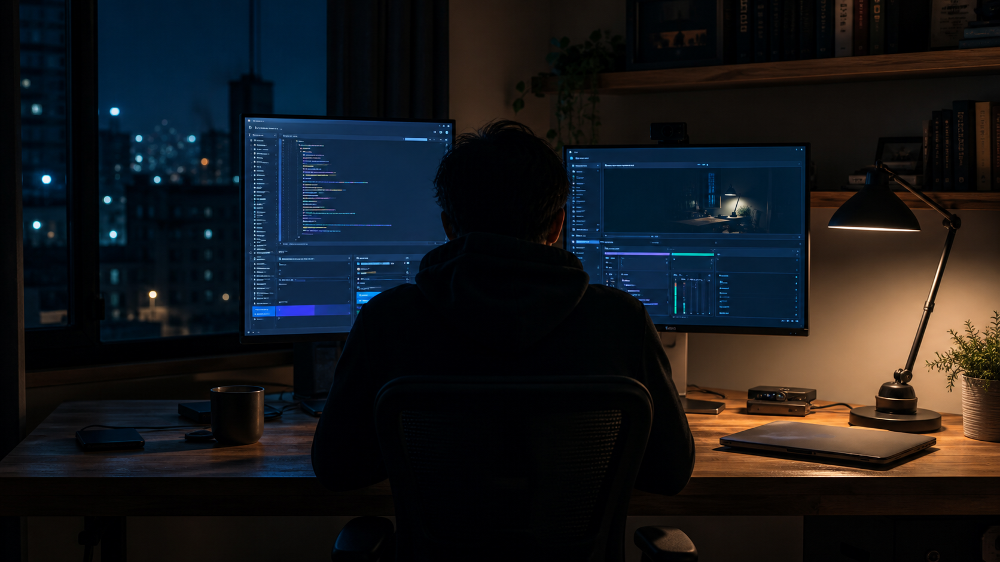
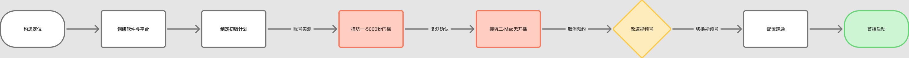

这事是今天下午临时起的意——业余时间做直播，把日常摸出来的 AI 编程工作流讲给更多人看，顺便给自己的线下课攒点信任。调研这块图省事，直接把要干的事跟 AI 说清楚，让它帮我查直播软件、平台规则、同行都怎么弄。查回来的方案看着挺靠谱。结果真上手才发现，拦住我的根本不是内容，是「我的电脑是 Mac」这么件小事。这篇记的是从起意到现在的完整过程，包括两次被平台账号权限当场打脸——写到发布这一刻，其实还没完全收尾。

我平时不管是本职工作还是业余折腾，用的都是各种 AI 编程工具，攒了不少实操经验。一直想找个方式讲给更多人听——不是发几张截图配文字，是把整个操作过程现场演出来，卡壳、报错都留着，不是剪好的成片。更实际的目的是给自己的线下课攒信任——道理很直接：先让人看到我真的会做这些事，之后聊报课才有说服力。
整体思路想得挺完整：直播为主（业余时间做，新号没人看的阶段正好按自己的节奏把知识体系过一遍），录屏剪成系列切片沉淀到 B 站，个站再开一个每日清单模块配合预热。这篇只记录其中最先动手、也最先出岔子的一段——直播间本身，从决定要做到现在，还没完全弄利索的这几个小时。
动手之前图省事，没自己一个个查，直接把要干的事跟 AI 说清楚——直播用什么软件、macOS 上有哪些权限坑、三个平台各自的开通门槛和算法偏好、同行都是怎么打法——让它帮我搜了一圈。查回来的结论挺扎实：B 站是长视频主阵地，OBS 负责推流，抖音和小红书发切片。
回头看，这份方案哪哪都对，就是没让我自己的账号先点头。

B 站桌面直播这条路走不通，已经发出去的直播预约只能取消。摆在面前的选择不多：借一台不熟的 Windows 设备死磕 B 站，或者先拿手机摄像头凑合开播、放弃桌面演示，再或者干脆换个对 Mac 更友好的平台。
最后选了微信视频号。这次学乖了，没再直接信一个「应该可以」——调研时特意加了一条：先查清楚视频号是不是也藏着类似的隐藏门槛，查不到确切答案就老实说查不到，别再给我一个后来被打脸的「一定可以」。查证下来，视频号公开文档里没有类似 5000 粉丝那道坎，但前置条件挺明确：得先注册视频号、在手机上完成实名认证。
好消息是，视频号本身不需要 OBS 就能开播——微信 macOS 版内置了「视频号直播伴侣」，支持添加屏幕/窗口 + 摄像头两类画面源，正好满足「共享 Mac 桌面 + 真人小窗」的核心需求。
直播间搭起来那一刻是挺爽的，终端窗口共享也弄成了。但整件事还差最后一环没验证完——光能开播不够，我要的是能剪出切片、拼成一整套课程的素材，这就得看视频号的「回放」到底靠不靠谱。查资料说回放要手动开、下载文件只保留半年、画质也不保证跟推流一致——这几个坑已经教会我一件事：这次不想再信「查资料说没问题」，打算直接拿这场直播实测，回放到底生不生效、下下来的东西能不能用。写到这段的时候，结果还没出来。OBS 先在本地录着一份垫底，不管回放测出来怎样，至少不会两手空空。
如果你也是 Mac 用户、也想从零搭一个能共享桌面的直播间，这是我踩完坑之后攒出来的顺序——照着走能省掉我踩过的那两次坑。最后一条我自己都还没测完，先诚实标在这儿。